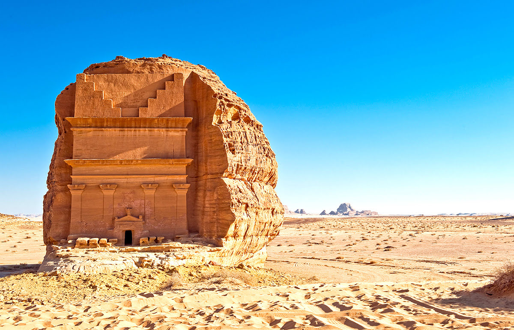

Kaaba, Mecca

Al-'Ula (Mada'in Saleh)

Capital: Riyadh
Population: ~37 million (2025 est.)
Language: Arabic
Traditions: Arabian hospitality, camel racing, falconry, and poetry recitals.
Foods: Kabsa (spiced rice with meat), dates, hummus, and shawarma.
Festivals: Eid al-Fitr, Eid al-Adha, and Janadriyah National Festival.
Activities: Desert safaris, visiting holy cities of Mecca and Medina, and enjoying traditional dance like Ardah.
